Design patterns: ecommerce (aka - how to sell stuff online)
The Basics
- Prices
- Images and Videos
- Descriptions
- Sizes, Colours, and other configurations
- Reviews
- Call(s) to action
Let's look at some shopping sites to break down how they execute on the basics
Amazon.com
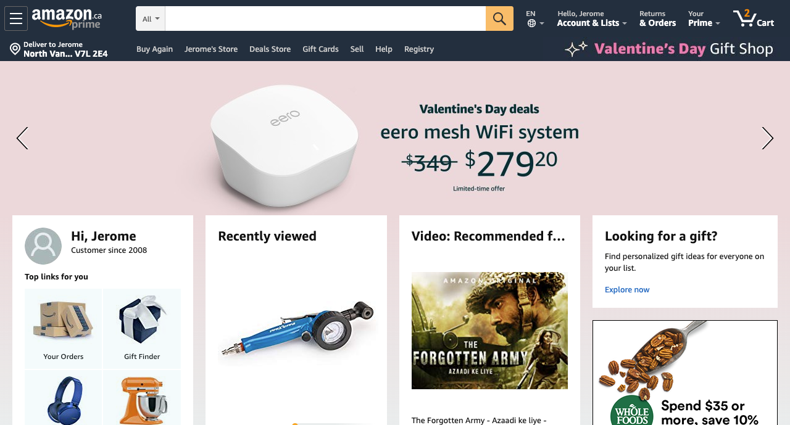
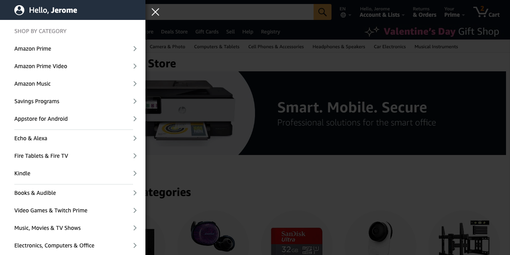
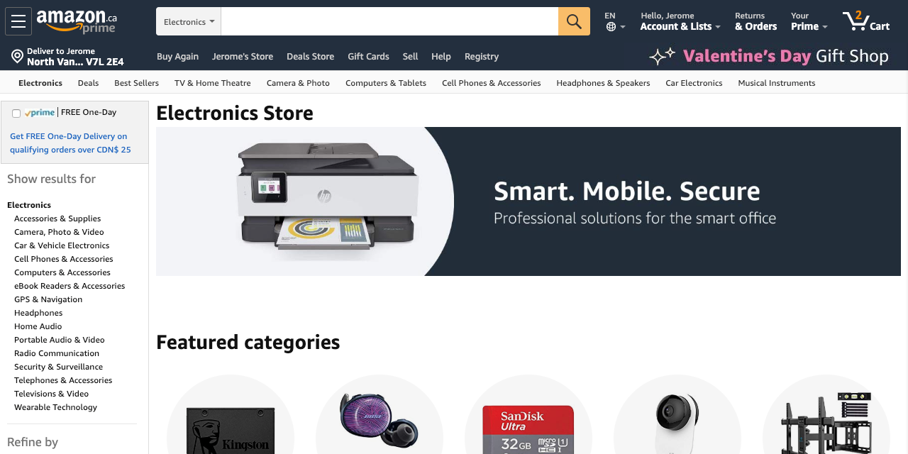
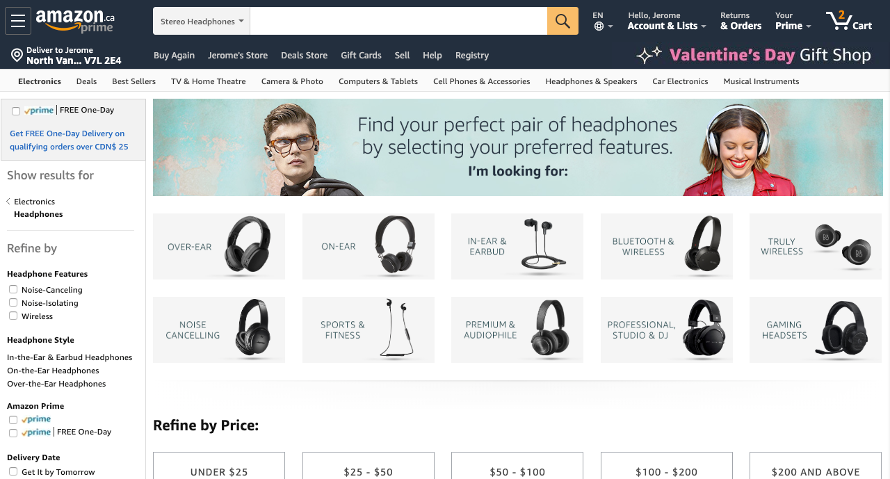
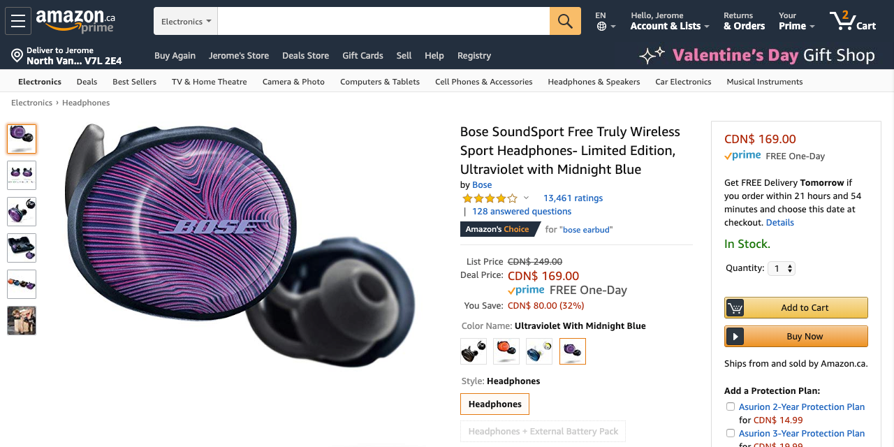
H&M
A cleaner design for the home page and more straightforward as compared to Amazon.
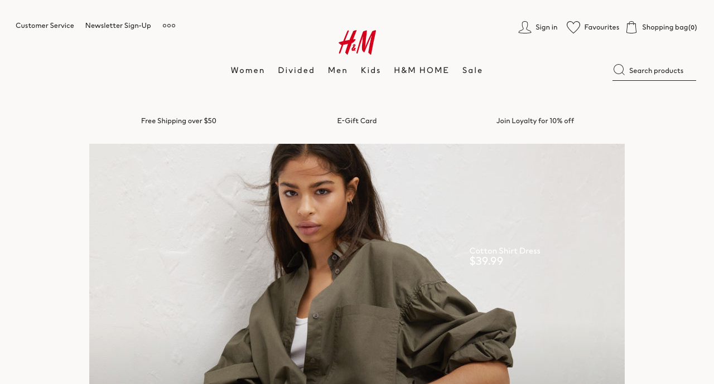
Note the use of the heart icon for each thumbnail
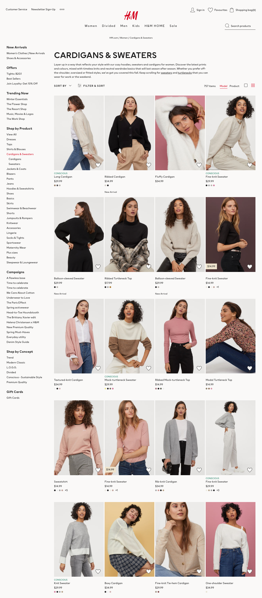
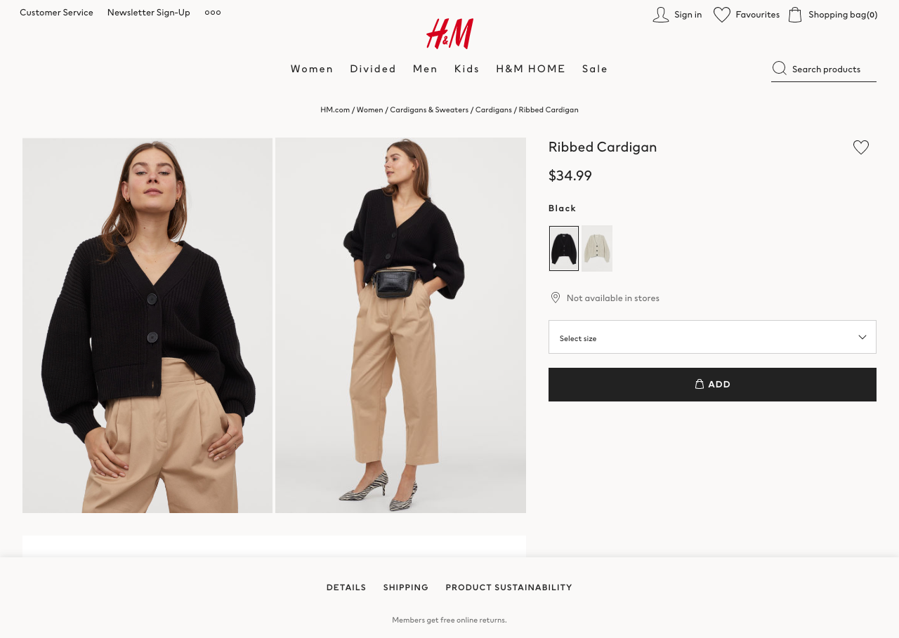
Zappos
Note the use of videos and faceted search
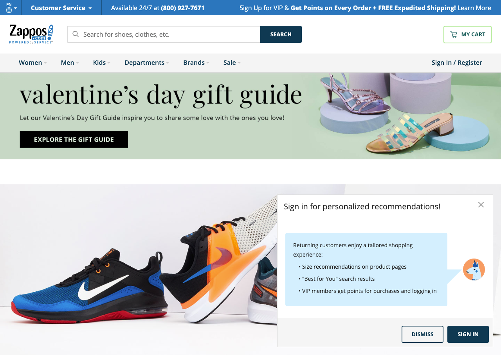
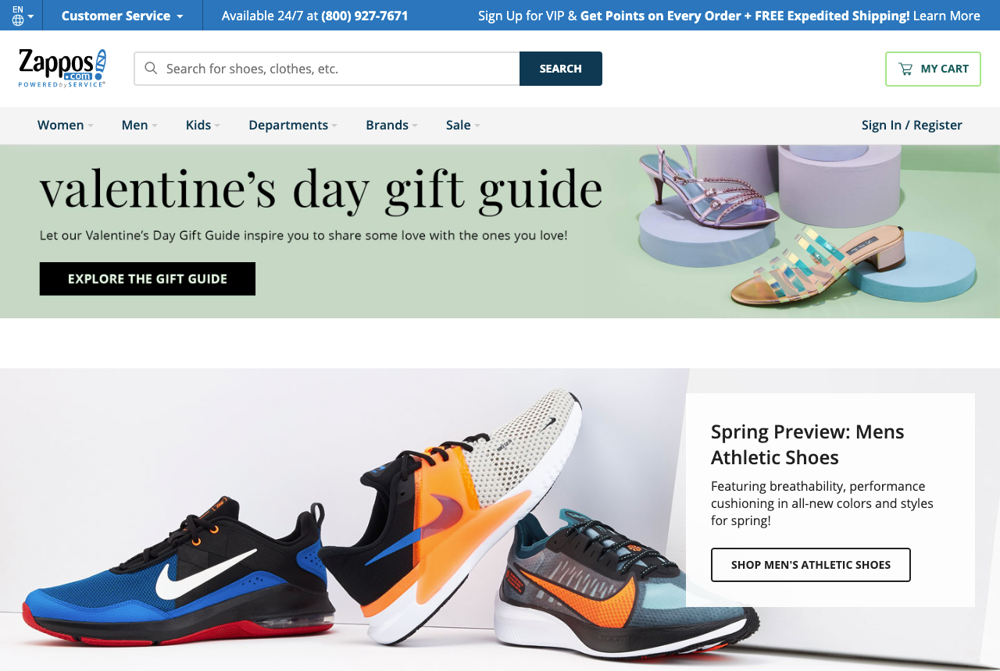
Here is a large faceted search UI in the left column.
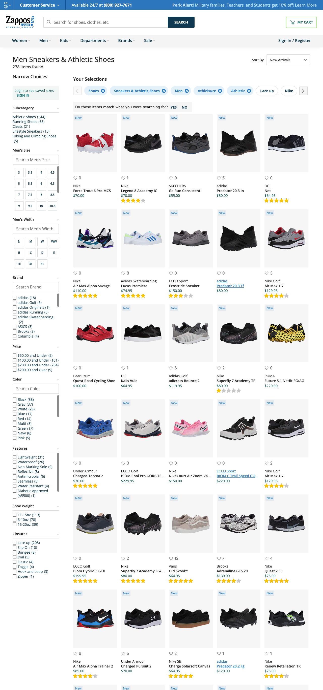
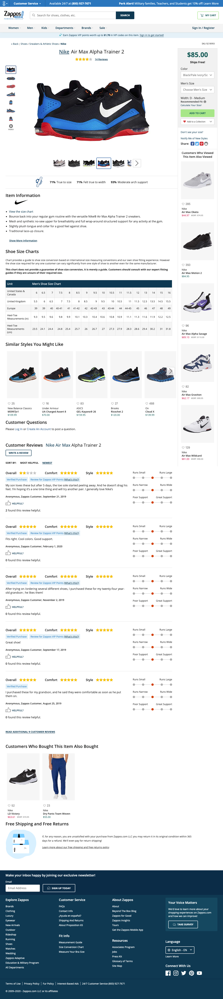
Here is a video description for a shoe. Not all shoes get this treatment, but some. Is this a good idea?
Patagonia.com
Note the use of multiple images and how they zoom in on images.
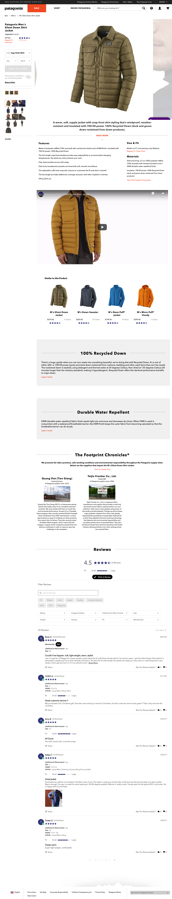
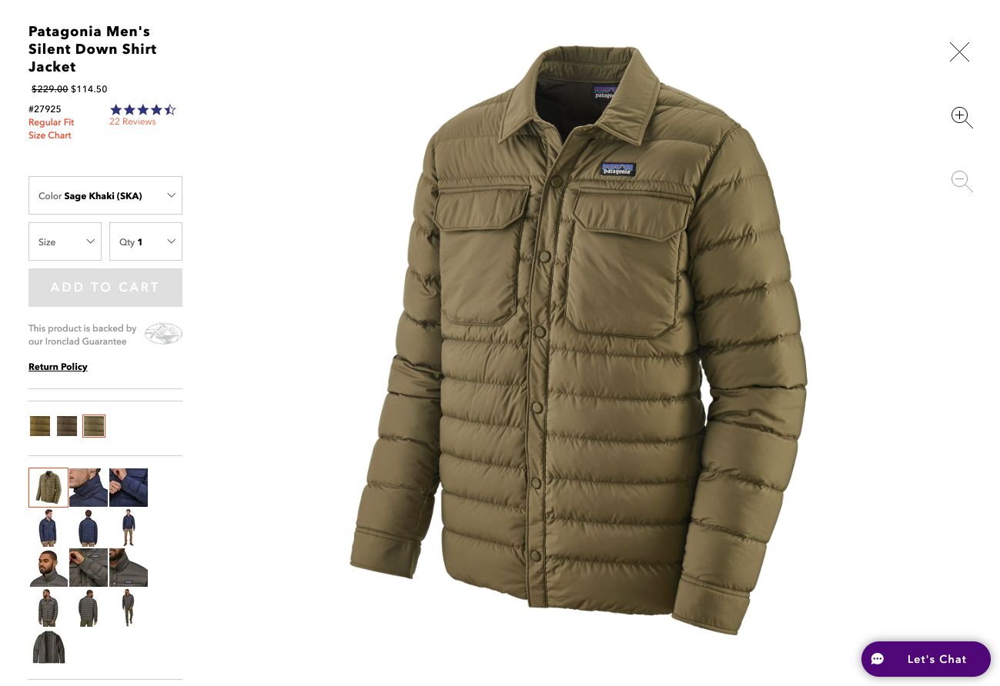
Threadless
Note the use of community submissions.

Best Buy
How does Best Buy handle a very deep product catalog with more than just two sub-categories in their menus?
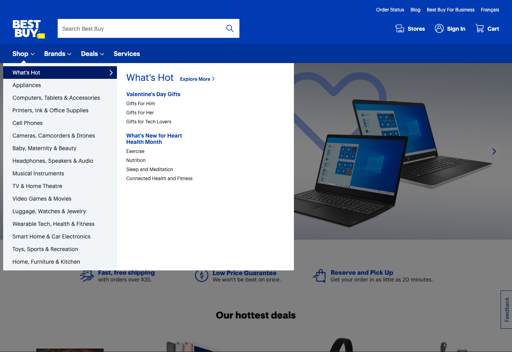
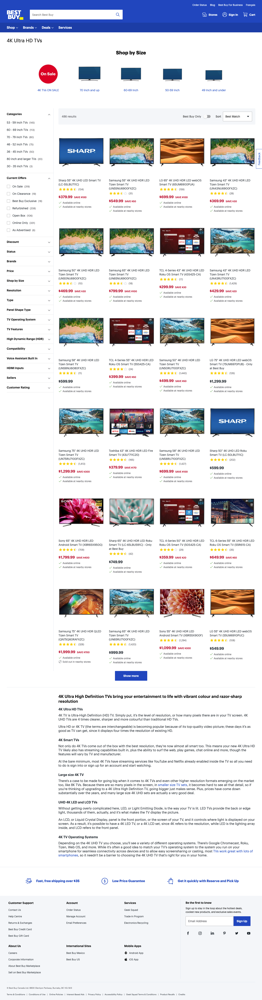
Apple Store
How do they handle the shopping cart updates when adding add-ons and configurations? e.g. when buying a new laptop
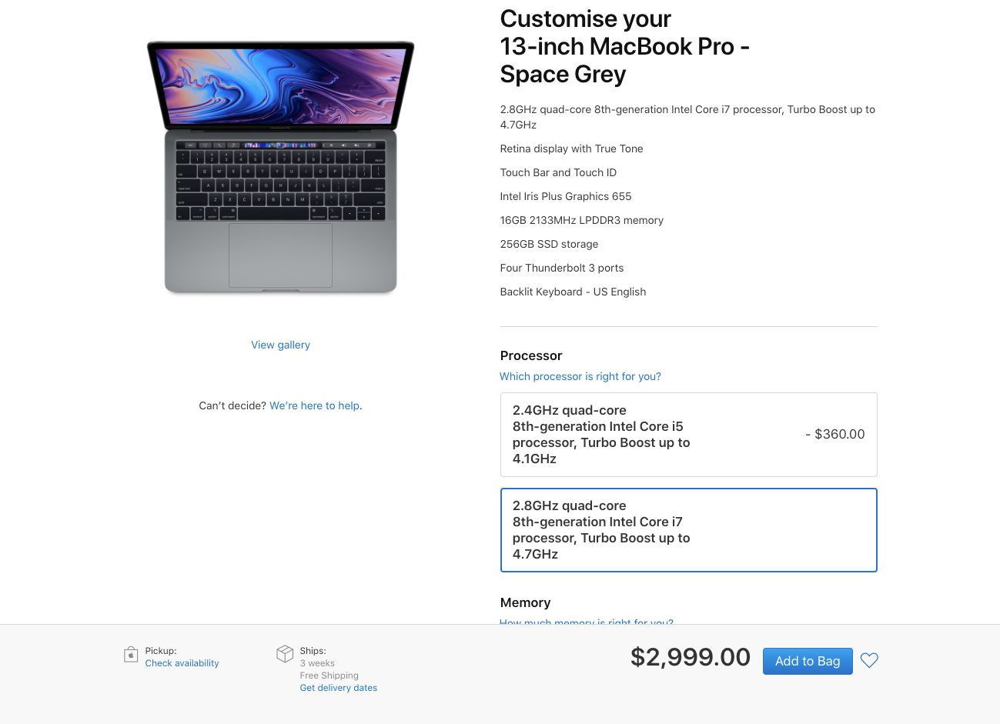
How do Google search results affect your site?
Do a search for a product in Google. Note that the search results will often take users to a deeper/internal page on a company's site. Not everybody links to the home page - it's becoming increasingly rare.
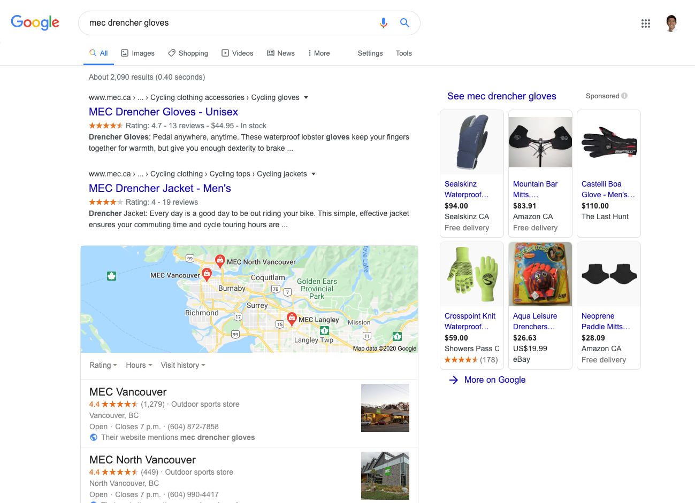
Once a user is taken deep into your site, this highlights the importance of strong navigation and 'wayfinding'.
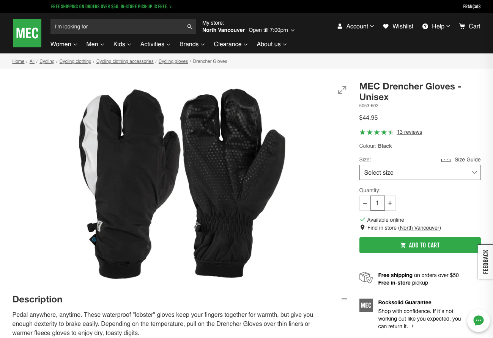